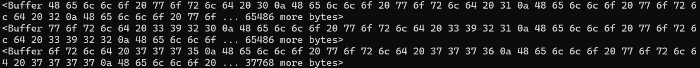

Streams
bigfile-make.js
// JavaScript Document
const { writeFileSync } = require('fs');
//makes a file with 10000 lines of text
for (let i = 0; i < 10000; i++) {
writeFileSync('./big.txt', `Hello world ${i}n`, {flag: 'a'});
};
All this code does is make a large file
index.js
// JavaScript Document
const {createReadStream} = require('fs');
const stream = createReadStream('./big.txt');
stream.on('data',(result) => {
console.log(result);
});
stream.on('error', (err) => {
console.log(`ALERT! ALERT! ALERT! n${err}`)
});
This code basically buffers data so it doesn't show up all at once
Displays:
server.js
// JavaScript Document
const http = require('http');
const fs = require('fs');
http.createServer((req,res) => {
//loads chunks of data at a time
const fileSteam = fs.createReadStream('./big.txt', 'utf-8');
fileSteam.on('open', () => {
fileSteam.pipe(res);
});
fileSteam.on('error', (err) => {
res.end(`${err}`);
});
}).listen(8080);
This code turns the text file into html and displays it on a server. This does the same thing that index.js does, just as a webpage.